ᚼ and ᛡ look exactly the same. Are they like J, read differently
in english and spanish? they're invariants of ᛆ and ᛃ and ᛄ and
ᚺᚻᚽᛀᛂ. ᚾ and ᛀ are also recognized as different letters. wiki only
gives ᛅ
I wonder they don't have staveless ᚼᛡ but only its double form ᛝ
which is ᛜ which is ᛄ or ᛳ when on staff.
I
take it all from wiki, don't rely on me more than necessary.
Those ᛜs are double ᚲ which is "the 6th letter of all the runic
alphabets" And it is also ᚴ so it surprised me that the one
telling that
(I gave the archive version of
the article
https://ru.wikipedia.org/w/index.php?title=Кеназ&oldid=102219515
which currently is there, so you can tell when I wrote it) knew
of bornholm alphabet. Because it is the 6th letter of that too.
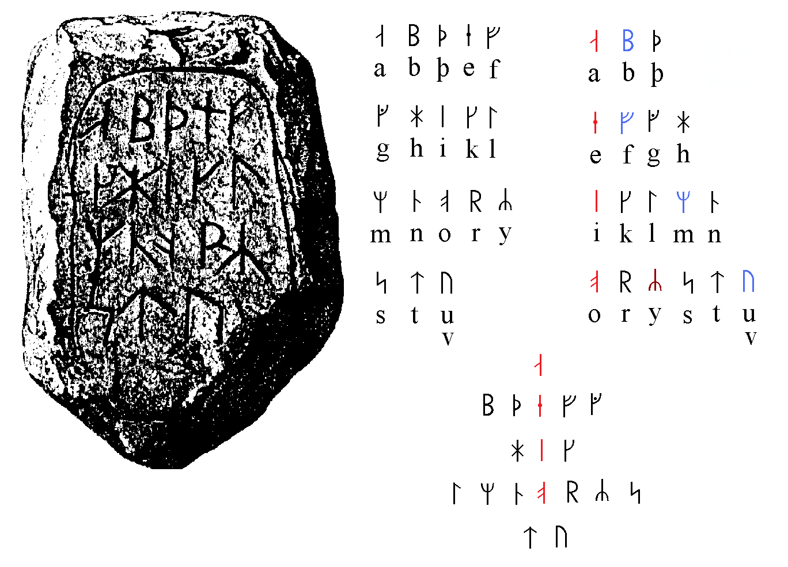
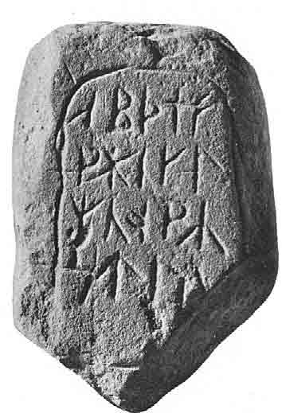
And I compared ᛆᛒᚦ with ᛄᛓᚦ of fbthark, those ᛄᛓ are forem
of ᛆᛒ but if ᚦ is third in both. Let's look at 9ths:
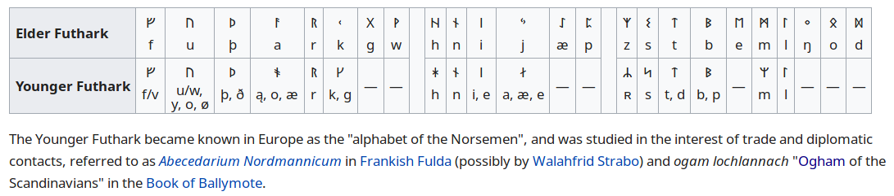
Now I wonder what if Elder Futhark is a
fabrication? Then it could also look like a later development of
a previous system. I leave this thought hanging for now. I look
at the 9ths:
It's I in Younger Futhark and И in Elder Futhark
(is it Elder as Elder's of Zion) I'm too
cynical.
which are invariants today. Is it why first line needed to mention
both staved and staveless forms? Because in Bornholm alphabet ᛁ is
8th. Is it why they needed additional I's. In latin alphabte I is
the 9th.
Why do aettir divide so weirldy in the image
above?
The following image shows where that Elder Futhark can be
attested, it's Kylverstene
n
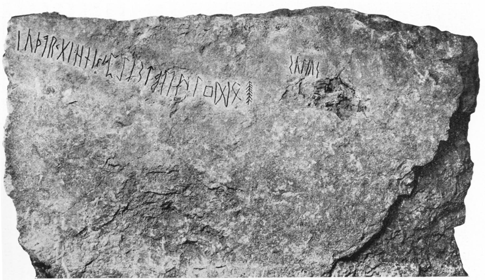
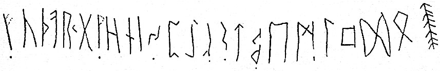
…ᚢᚦᚨᚱᚲᚷ…ᚺᚾᛁᛃᛈᛇᛉᛊᛏᛒᛖᛗᛚᛜᛞᛟ
[f] u þ a r k g [w] h n i j p ï z s t b e m l ŋ
d o
The way first letter actually look (even if by an incident) made
me look at it as alphabetic record actually, and it's easier for
me to see at ᚢ as an invariant of ᛒ because В is russian for V,
which is an invariant of U, which is ᚢ
But why ᛆ is ᛁ? ain't every vowel ᛁ? ا, I and ו, the three main
vowels all can be 1
ᚦ is on its place, and the next in futhark is literally a, and
it's some weird form of it: ᚨ is it ゛'ed ᛁ? tittled
is the new word I learnt, tittle is definitely
little. t is tittled l. f is tittled ſ which make them closer to
θ.
ᚨᚩᚪᚫᚬᚭ are invarinats, all A
The next one is complicated: ᚱ only reminds ᛒ and that's where
symilarities end.
but the nex letter снова совпадает. Какие шансы того что это
случайность, и мы пойдём дальше и встретим подобные совпадения ещё
несколько раз. Но это могло быть и взаимовлияние систем письма,
когда мем "ᚲ
ais the 6th rune"
проявляется в обоих системах, закрепляясь там эдиктами.
and ᚷ is staveless ᚼ (both stand for h)
Why those reconstructers tryed to guess ᚹ where it stands ᛁ again
in the same place as in bornholm.
But further I don't notice many coincidences, other than ᛈ around
where P is in latin and ᛊᛏ just as ᛋᛏ in bornholm. and ᛉ is
supposedly not M of ᛘ, but R
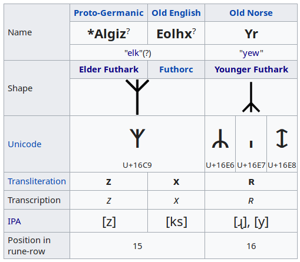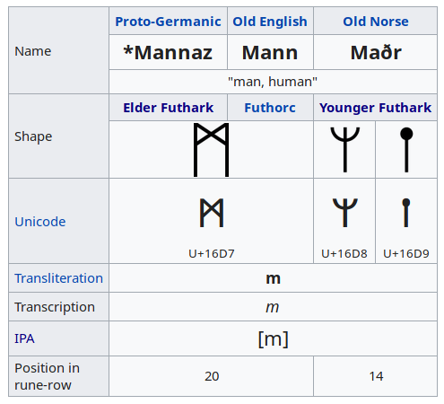
That ᛗ form of ᛘ I recognize as double ᛘ, but ᛙ form allows me to
recognize it in another ᛁ at the 11th place of bornholm's ᛘ
and that letter ᛀ is recognized as N, once again in alphabet stave
is double vertical (or did I see on this example? It's somewhere
in my notebooks past collection42 or so) and once again L ~ N, ᛚ ~
ᚿ
I don't know how they recognized in there, but ᛢ stands for
kw, just as q I'd expect to see between p & r
So hence I claim that futhark is misrecognized alphabetic canon.
Too many coincidences to be separated.
and the parade of coincidences goes on:
ᛒ after ᛏ just as ᚢ was both after ᛏ in bornholm alphabet and
instead of ᛒ in this exact set. ᛏᛒ are also the two legendary
first consonants.
ᛖᛗᛚᛜ is an additional line in abcd form of EMLNg, which could be
that early form of I-row, which until the beginning of the second
volume of this work was only reconstructed, but now I revisited
that part and I tell it's the thing.
ᛞ is a double form of ᚦ and could be both ס and Z
& if that past-T line are Υ Φ Χ, then it's Ψ
before the omega of ᛟ. (X reminds ᛀ just as H(h) reminds
Н[n], even more than h ~ n, and I mentioned that both L & Ng
can be hidden in that X, or only L, and Ng is Y, then ᛞ is Z, and
ᛟ is &)
And before vowel ᛈ stands ᛃ which an be seen at as at a form of ᛆ
isnt it double Ar? J is two? ij? Y?
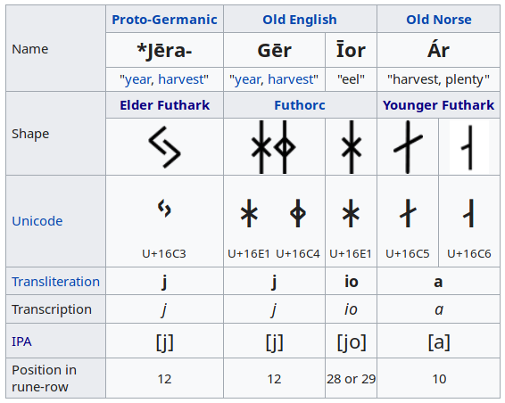
Form ᚼ
ᛡ tells that it's double ᛅ
(just as ᚮ is double ᛆ, and ᚮ is the vowel which is in the head of
that line)
Form ᛄ once again tells me that a ~ d, for d is
Þþ which is ᚦ
SO I CLAIM HERE THAT FUTHARK IS ACTUALLY
ALPHABET (MISTRANSLITERATED)
Futhark is mistransliterated Alphabet.
Some
early and dialectal form of it either.
That Kylverstene also has 24 letters, which is 3 aettir by 8 or 4
dice by 6
I said that ogham is the basic alphabet and runes are maybe older
than latin, and here's why we shouldn't trust archaeology that
much
:
On October 23, 2000, Fujimura and his team
announced that they had another finding at the Kamitakamori site
near Tsukidate town. The finds were estimated to be 570,000
years old.
On November 5, 2000, the newspaper Mainichi Shimbun published
pictures of Fujimura digging holes and burying the artifacts his
team later found. The pictures had been taken one day before the
finding was announced. Fujimura admitted his forgery in an
interview with the newspaper.
Fujimura confessed and apologized the same day in a press
conference. He said that he had been "possessed by an
uncontrollable urge".[1] He had planted the artifacts from his
own collection in strata that would have indicated earlier
dates. In Kamitakamori he had planted 61 of 65 artifacts, and
had earlier planted all of the stonework in the Soshin Fudozaka
site in Hokkaidō. He claimed that these were the only times he
had planted artifacts.
The Japanese Archaeological Association disaffiliated Fujimura
from its members. A special investigation team of the
Association revealed that almost all the artifacts which he had
found were his fabrication.
Though he was criticized before some true journalists did their
job, so I wouldn't discard the field completely, but he wasn't
disaffiliated for somewhat 25 years, and probably wouldn't be if
he wasn't caught by the hand, so keep some healthy scepticism on
what is considered true.
They didn't have videocameras centuries ago, so what anybody
claimed can be irrelevant, for replication crisis goes all the way
down the history.
Isn't history already
thestory?
I was wondering why don't I see staveless ᛒ and here it is:
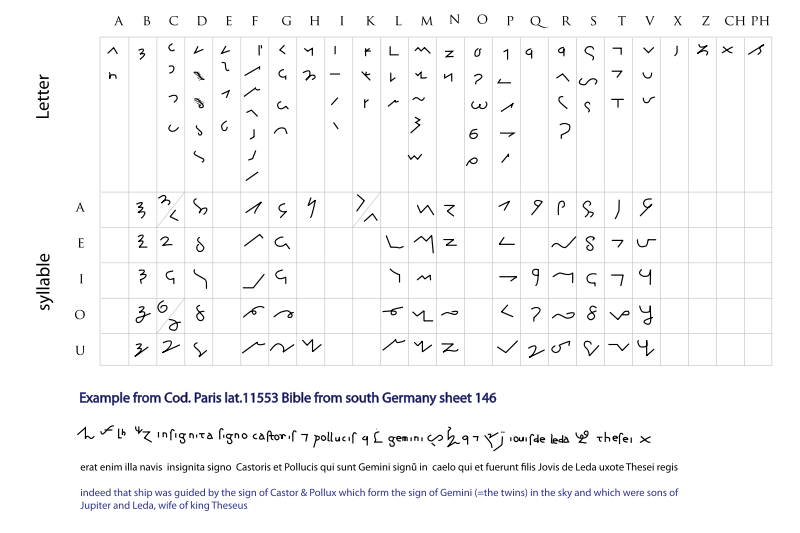
and here's another bonus, a daredevil claim that primitive forms
of ogham are another evidence that it is the primary, the most
primitive form of alphabetic writings. another to this one:
I compared oghams between themselves, and figured out that
initially there was only one and two, the bianry before one and
zero. The binary which naturally grew out of unary numeral system,
which is called in russian единичная, унарная, разная. И я сначала
не понял почему разная? может равная? а, РАЗная! раз, раз, раз,
разрубает, разделят пространство один раз или два. Этот тот дин,
который одновременно и два
(дин вместо
один, един само написалось, о- может быть приставкой как в
японском お или е- как в הеверйском иберском?
Иберия is Sapain. and I stumbled across it before. And jews do
look like spaniards or saqartvello which soulds italian, and
those three could be of those 12 elbows, please don't hate me
for uttering in, but to lighter colours you all look like the
transitional group between us and the blacks you consider
blacks. If we humans are all one group, we do have subgroups we
distinguish between eachother whether we discriminate or not.
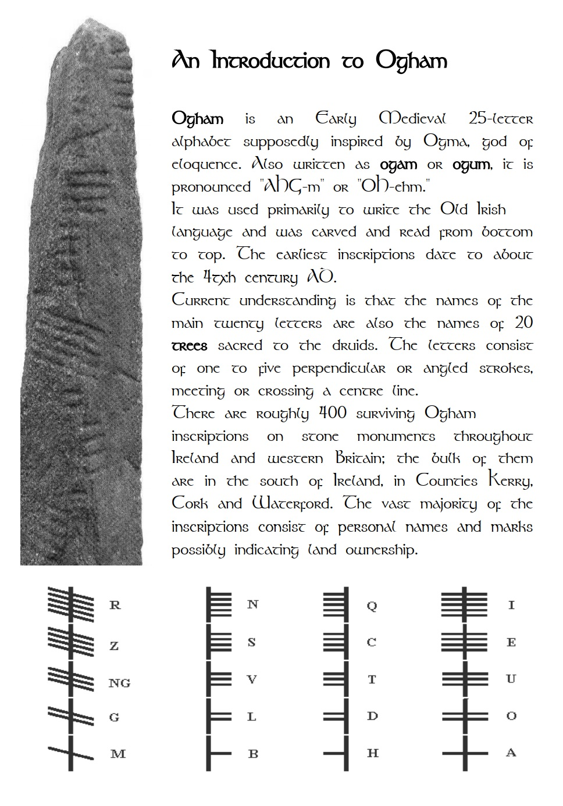
Tolko v otlichie ot run
e it has ..
But it's different from runes in putting labials up front. Which
another thing making it the most original (primal, изначальное)
форм
In both vowels and consonants.
That discovery was made in my notebooks which I haven't scanned
yet, because they are still in progress.
See it in that scan (it's in European Architecture notebook) in
short here it is: it didn't matter whether it was left or right,
or even across:
(M=B=H
, b is a form of h in japanese, and language is
actually common, playing from this sumption I discover common
morphemes in different languages to facilitate the education in
languages) (L=D=G
, handwritten g is d in russian, d & l are
similar in glagolic, l & g were often seen as invariants,
which surprised me and confused of why, but it seems ג = λ) (F=T=Ng, where f=t screems θ and Θ could
be G (or Q) with an н [n] in it. It can also be (N=T=Ng
, for ogham is sometimes named Beth-Luis-Nion
and because of Beth & Luise are female name, they can be the
three fates. There probably used to be 3 oghamic signs (per aet)
before there was 5. (S=C=Z
, these
three is rather self-explanatory) (N=Q=R,
and if it's not N, but that very F, it's P=Q=R
, which is discussed in that notebook) that N ~
V thing could be related to ν[n] in
greek, for v[f] in german/ and
The differences in the reading of the third
line could be related to the guess that 4 could be the doubled
2, and what is 3? 2&1 together, GH? which does sound as F,
is it F or N? Are they different? isn't ν v?
Dh = T? DM? m is t in russian cursive. It's confusing, but Ng as
the primal form explains how labial (or is it nasal?) can
juxtapose the lingual (or is it oral?)
And why I went there is I read at academia.edu that they found
ogham-like writings on american continent (which is nothing
special, for a chipped wolf walked from northern europe to
greenland and canada by ice. He could be taken there by
fraudsters, or the results can be forgered, for replication
crisis and so on, but I think it's pretty much a consensus now
that it happened, just like they figured out that people
travelled the pacific ocean. I'm wasting my high for telling you
mostly what I've already known, so I"m back to my notebooks.
take care.
If there were only ones and twos, and three of which, could they
be on a dice?
Not very likely, more likely the 5 oghams were on them, and the
sixth side was blank. Is it how Y became the 6th vowel? It's just
a guess, or apossibility to гадать (guess, tell fortune)
Ogham has many common feature with the rest of european alphabets:
o is double a, as in runes and as in dannish orthography. Ogham
seems to be the pole of the labials-first thing, only for whatever
reason it puts labials in odd position and linguals in the even.
The only explanation I can see to it so far is that they were
recognized not as labial, but nasal; and not lingual but oral,
thus nose was male for it's a shaft and mouth was female for it's
a hole. and here could the contradictions of mama-deda take place,
that could explain why maður stands for man.
(inhaled some sacred smoke) My thought probably led me
this way because eves even and adams add is based in our flesh, in
its' forms, where guys have 1 or 3 additional elements, which is
more likely to be 1 for girls have lips - are they 2? 4? 6 with
tits? I think it only tits count, for labia are behind the bush a
guy also has, so it's like they just lack cock. so it's 1 for cock
& 2 for tits. систра. and... cook? cock, guard, gus, goose!
душить гуся! also fish is pisk.
goose could be related to [eqsee it in russian keyboard/ see and reed meet isſf
s is sh is zh is r, both are c
and a third piece, just because it followed this one, and it ends
in mentioning the site I edit it for, and it mentions the same
stone, which I didn't notice before:
ꟷ tells that H is an invariant of I, which used to be in old
russian orthography. a double I, Y, 𓇌
urprisingly Y became to sound as Й which is recognized as a
shorter version of И.
as in boy. is it because the second one became shortened, and
vowels are often swallowed in both text and speech.
Another important piece. I just found this image, and I was taught
gotic, nobody knew it after such a teaching, and they gave us a
later script, here I found it conceals runic script from 4th
centurey a.d, which is often mentioned as the earliest period of
runic inscriptions, and Tacitus witnessed that they used some
divination with these letters
, but now I
don't even remember if he did or I reconstructed it volumes
before. This book is already too big for my head, I don't know
her myself for sure, and it may cause contradictions, which I
should seek in these folumes with a help of AI
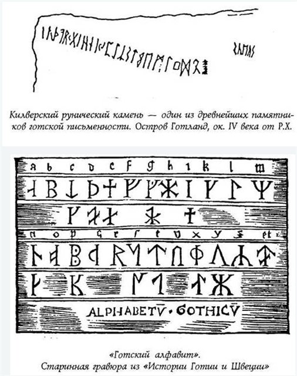
ᚢ is probably П (p) because if we compare ᚮ lines in bornholm and
this one, we have to remove ᛣ and thus we have only ORSTU, where U
is that very ᚢ which looks like П (which is how P look in russian,
and which is missing from the ORST line. Russians don't have Q's
so if we compare runes to russians we may find some common ground.
which was before they began reforming the system by adding their
own inventions.
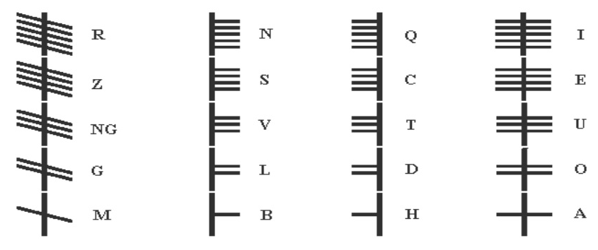
If the order of ogham used to be BLN, vowels were AOI or were
they? They would be confused for MGR all the time, thus vowels
make me very suspicius about their actual use in ancient ogham
(I read they found ogham in america, I will bring link later, Im too high to look
for it right now. When I
say I'm high, I always speak of weed, I don't take anything
else, but it was enough to turn me even further into an autistic
researcher, not being able to communicate with women and other
people too, sex is not that interesting to allow another person
to be in your head all the time, it's not safne and incompatible
with being a true scientist.
I found sense
Academia recommended me an article called Vowels
in Punic and in Runic which intrigues, but it lacks the rune
forms, it prefers to speak of them without showing the forms
of them in the very beginning, and it writes so much text
for just that one comparison. I have such a flow of ideas,
that I have no time to perform it like that, and why would
I?
for whole version visit aeiou.ru